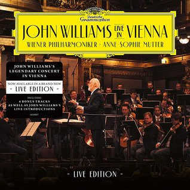
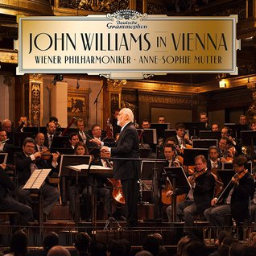
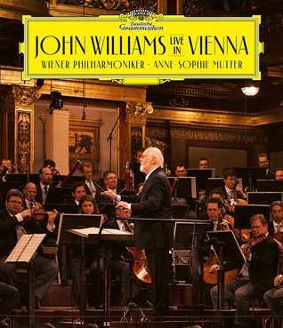

Concerts
The Orchestra
The orchestra's close association with this rich musical history is best illustrated by the statements of countless pre-eminent musical personalities of the past. Richard Wagner described the orchestra as being one of the most outstanding in the world; Anton Bruckner called it "the most superior musical association"; Johannes Brahms counted himself as a "friend and admirer"; Gustav Mahler claimed to be joined together with the orchestra through "the bonds of musical art"; and Richard Strauss summarized these sentiments by saying: "All praise of the Vienna Philharmonic reveals itself as understatement."
The Vienna Philharmonic Orchestra Academy was founded in the summer of 2018. The main objective of the academy is the artistic training of young musicians through individual private lessons, chamber music, audition preparation and orchestral training through work within the orchestra.
Until the first Philharmonic concert on March 28, 1842, the City of Vienna did not have a professional concert orchestra, despite the presence of composers such as Joseph Haydn, Wolfgang Amadeus Mozart and Ludwig van Beethoven.
John Williams in Vienna
Listen to the concert performance given by John Williams and the Vienna Philharmonic last January.

CD: John Williams In Vienna (Live Edition)

LP: John Williams In Vienna

BLU-RAY: John Williams - Live in Vienna